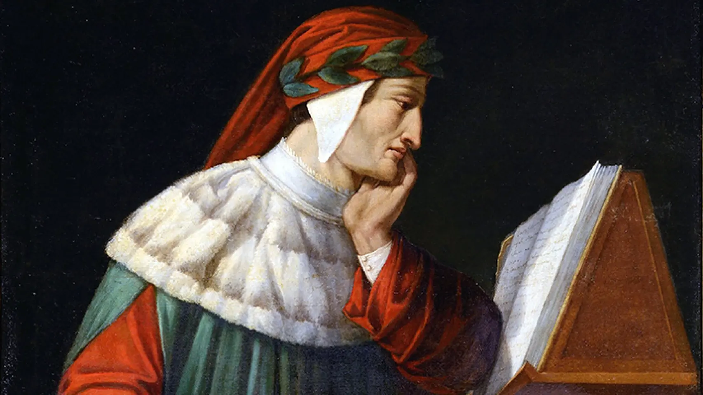

DantescoBot: asistente conversacional literario
El objetivo de este chatbot es crear un vínculo entre literatura y tecnología en un espacio virtual...
Por otro lado, cualquier persona interesada en los avances tecnológicos en humanidades digitales...
Por favor, para poder explorar este recurso, accede al botón que se encuentra abajo a la derecha.

Retrato de Dante Alighieri. Attilio Runcaldier (1801-1884). Rávena, Museo Dantesco.